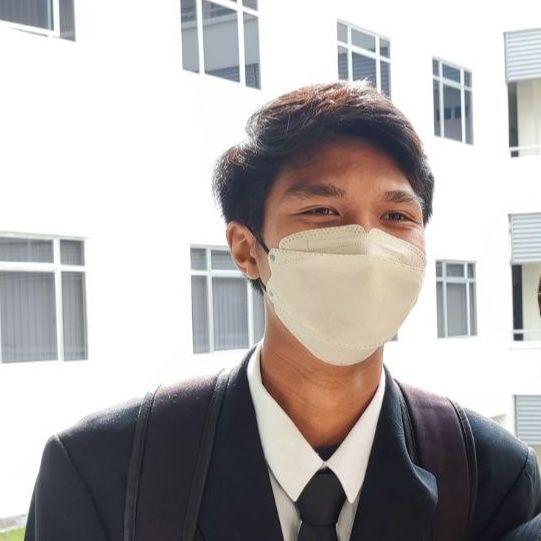

Maklumat Asas
Nama Penuh: Faris Afizuan Bin Abd Kaharmuzakir
Tarikh Lahir: 21 Julai 2004
Tempat Lahir: Hospital Bersalin Kuala Lumpur
Umur: 20 tahun
Lokasi Semasa: Sungai Petani, Kedah, Malaysia
Maklumat Hubungan
Email: example@example.com
No Telefon: +60123456789
Pendidikan
Sekolah Menengah: Sekolah Menengah Kebangsaan Contoh (2020)
Universiti: Universiti Contoh, Ijazah Sarjana Muda Sains Komputer (2024)
Pengalaman Kerja
Jawatan: Pelatih Pembangunan Perisian di Syarikat Teknologi (2023)
Kemahiran
Kemahiran Teknikal: HTML, CSS, JavaScript, Python
Kemahiran Lembut: Komunikasi, Penyelesaian Masalah, Kerjasama Berpasukan
Maklumat Peribadi
Hobi: Melancong, Membaca, Pengaturcaraan
Matlamat: Untuk menjadi seorang pembangun perisian yang berjaya.
Galeri
